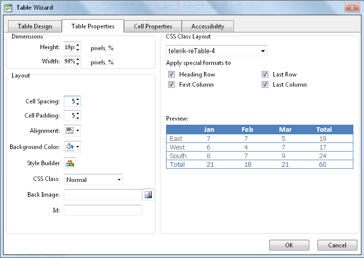

Setting Table Properties
How to set the optional properties of a new or existing table using the Table Wizard of the TelerikEditorProvider for the RTE.
- Open the Table Wizard. See "Inserting a Table" - OR - Right-click on an existing table and then select
 Table Properties from the drop down list.
Table Properties from the drop down list.
- Go to the Table Properties tab and set any of these optional settings:
- In the Dimensions section:
- In the Height text box, set the table height in either pixels or as a percentage by either typing a value into the text box or by using the Increase
 and Decrease
and Decrease  buttons. The value will automatically be saved in pixels unless you enter the percentage symbol (%) into the text box. E.g. Enter 100px or 100 to set the height as 100 pixels, or enter 100% to set the height as 100%. Leave blank for no specified height.
buttons. The value will automatically be saved in pixels unless you enter the percentage symbol (%) into the text box. E.g. Enter 100px or 100 to set the height as 100 pixels, or enter 100% to set the height as 100%. Leave blank for no specified height. - In the Width text box, set the table width in either pixels or as a percentage as for height. Leave blank for no specified width.
- In the Layout section:
- In the Cell Spacing text box, enter a number to set the pixel spacing between cells - OR - Use the Increase and Decrease buttons.
- In the Cell Padding text box, enter a number to set the pixel padding between cells - OR - Use the Increase and Decrease buttons.
- At Alignment, click the arrow of the Alignment Selector button and select the table alignment.
- At Background Color, click the Color Picker
 button and select the background color.
button and select the background color. - At Style Builder, click the Style Builder
 button and build one or more styles. See "Using the Style Builder"
button and build one or more styles. See "Using the Style Builder" - At CSS Class, select a class for the content of this table.
- At Back Image, click the Image SRC
 button and select a background image for the table.
button and select a background image for the table. - In the Id text box, enter an Id reference for this table.
- In the CSS Class Layout section:
- Select a CSS layout design for your table from the drop down list. The design is displayed in the Preview window below.
- At Apply Special Formats To, check or uncheck one or more check box to apply/remove one or more styles as desired. The changes can be viewed in the Preview window below.
- Optional. Select a new tab to set additional properties.
- Click the OK button to confirm.

Setting Table Properties